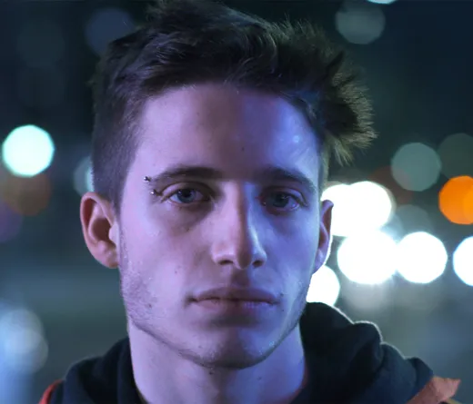

Wos, cuyo nombre real es Valentín Oliva, nació el 23 de enero de 1998 en el barrio porteño de Chacarita, hijo de Alejandro Oliva, artista musical y fundador del grupo La Bomba del Tiempo, y de Maia Mónaco, cantante (con dos discos publicados, Cosmos y Raíz). Debido a la fuerte influencia artística de sus padres, durante su infancia estudió piano y batería, además de actuación en Escuela Metropolitana de Arte Dramático (EMAD). Culminó sus estudios secundarios en el colegio Mariano Acosta.
Durante su niñez, asistió junto a su padre a varias marchas de protesta durante la crisis argentina de 2001, y, en su adolescencia, formó parte de varias tomas de escuela. A los 13 y 14 años, participó en el canal de televisión Paka-Paka en varios reportajes y segmentos, donde hacía rap de estilo libre o tocaba la batería. Durante esta época, empezó a integrarse en las batallas de rap cuando vio a unos chicos compitiendo en una plaza, y a partir de ahí decidió inscribirse en la competencia El Quinto Escalón, siendo el competidor más joven.
Wos apareció por primera vez en El Quinto Escalón en agosto del 2013, con 15 años. En esa batalla, enfrentó al host, Muphasa, y a otros dos raperos. Su primera línea: "Me dice enano, mirá cómo lo hundo/Napoleón, 1,50 ¡Y dominó medio mundo!" hizo estallar al público que observaba la competición, y pronto empezó a hacerse un nombre reconocido en las batallas de rap de Buenos Aires.
Alrededor de 2015, Wos reapareció en el Quinto Escalón luego de haberse mostrado más ausente el año pasado, esta vez más crecido y con la voz cambiada. Para inicios de 2016, El Quinto Escalón se viralizó en internet y Wos se volvió uno de los competidores más destacados. En la segunda fecha hizo dupla con el rapero Mamba y, en la batalla frente a los raperos Nacho y Ecko, Wos tuvo uno de sus minutos más virales y que se popularizaron en YouTube. Esa fecha, Wos acabaría coronándose de su primer Quinto Escalón.
En la final del Quinto Escalón de 2016, Wos derrotó en una fecha especial en escenario al legendario freestyler argentino Dtoke, y en semifinales a Acru, ya consagrándose como uno de los raperos más destacados del país. En la final, vencería al rapero Klan, y sería su primer gran éxito de su carrera como competidor de rap.
Ya para 2017, Wos continuó participando en El Quinto Escalón, y también tuvo participaciones especiales en competiciones como Ego Fest, donde saldría subcampeón. Saldría campeón de varias fechas del Quinto, y también conquistaría la final nacional de la competición Batalla de Mentes.
Para mediados de año Wos lograría entrar en la Red Bull Batalla por primera vez, donde salió campeón ante todo pronóstico en el Luna Park luego de derrotar a Nacho, Papo (el favorito y último campeón), Ecko y a Klan en la final. Así, se clasificó a la Internacional que se llevó a cabo en México, donde dio un gran papel en su primera participación internacional, derrotando a Melvin La Cura, Skone (actual campeón internacional de Red Bull), Yenky One y quedando segundo detrás de Aczino, local y máximo favorito. En 2017 también coincidió con el último año donde se realizó el Quinto Escalón, realizando una competencia de despedida en Microestadio Malvinas Argentinas, donde Wos partía como uno de los favoritos y quería despedirse de la mejor forma de la competencia que lo había visto crecer. Sin embargo, no pudo lograrlo, perdiendo la final contra Dtoke.
En 2018 participó en otras competencias, como The Fucking King en Córdoba, donde se consagraría campeón, o la Double AA en la cual en la edición en Chile cayó nuevamente con Aczino en octavos, pero que ganaría una semana después en Argentina, siendo esta la primera vez que lograría derrotar al mexicano, esta vez en semifinales. Debido a su subcampeonato en 2017, Wos volvió a entrar en la Red Bull Batalla Internacional de 2018, que esta vez se celebraría en su país, y donde se coronó como campeón, tomándose revancha del año anterior en la final con Aczino. En la FMS Argentina 2018 Wos también salió victorioso después de ganarle en la definición por el título en la última fecha a Papo, consagrándose como campeón nacional y del mundo del freestyle en español en el año.
En 2019, anunció su retiro de la FMS para desviar su atención a su carrera musical. Sin embargo, Wos declaró que seguiría activo en otras competencias, como por ejemplo GodLevel, en la cual representó a Argentina junto a Papo y Trueno y en la que quedaron subcampeones. Wos también regresaría a la internacional de Red Bull Batalla en España, donde fue eliminado nuevamente por Aczino en octavos de final.
En 2018, Wos tuvo un papel protagonista en la película Las Vegas, dirigida por Juan Villegas, y que contó con reseñas mixtas. En octubre del 2018 participó del tercer episodio de Pasado de Copas, la versión argentina de Drunk History, interpretando a Frank Sinatra. En 2020, formó parte del elenco en Casi feliz, serie de Netflix. También fue parte del documental Rompan todo: La historia del rock en América Latina, que aborda una perspectiva sobre la historia del rock latinoamericano, estrenado en diciembre del 2020.
Luego de haber sacado varias canciones en YouTube junto a su agrupación DS3, en 2017 y de colaborar con el grupo de funk-rock "Banzai" en dos canciones, Wos sacó su primer sencillo oficial «Púrpura», seguido por «Andrómeda», bajo el sello Agencia Picante y la producción de Louta y Nico Cotton.
En marzo de 2019, lanzó el sencillo «Terraza», producidos por Ca7riel y Evlay, que contó con 500.000 reproducciones en un par de semanas. A fines de ese mes, se presentó en el festival en Argentina del Lollapalooza. En julio, lanzó el sencillo «Animal» junto al rapero Acru, que en minutos alcanzó las 400.000 reproducciones y fue tendencia en Argentina y España.
El 9 de agosto de 2019 lanzó el primer sencillo de su disco debut, «Canguro», donde hace una crítica hacia los políticos argentinos, principalmente a Mauricio Macri, a quien interpreta el mismo en el video oficial, y hacia la idea de meritocracia, bajo el sello de Doguito Records. El sencillo tuvo más de 800.000 visitas en un par de horas, y alcanzó el puesto número 1 en las listas de Argentina, manteniéndose en el Top 10 por varias semanas. Dos días después participó en la transmisión del canal de YouTube de El Destape donde anunció que era inminente el lanzamiento de un álbum con 7 canciones. El álbum vio la luz a principios de octubre de 2019 bajo el título de Caravana, y realizó su presentación oficial el 11 y 12 de octubre en Groove.
as fechas de presentación en Groove quedaron cortas así que anunció una fecha para el 19 de diciembre en el legendario Luna Park. Como las entradas se agotaron en horas, el rapero decidió agregar una nueva función el 18 de diciembre. Esta función también fue sold-out.
En febrero de 2020, se anuncia una colaboración con Cami, cantante chilena que lo habría incluido en una de sus canciones de su nuevo disco denominada «Funeral». El 21 de mayo de 2020, durante la cuarentena, lanzó un EP denominado Tres puntos suspensivos, compuesto por las canciones «Ojeras negras», «Alma dinamita», «40» y «Algo del vacío», esta última junto a Manu Oliva, su hermano.
Para septiembre, Wos se hizo con cuatro Premios Gardel por mejor nuevo artista, mejor álbum/canción urbana y mejor diseño de portada por Caravana, y canción del año por «Canguro». Además fue nominado para los premios Latin Grammy por mejor nuevo artista y a los Premios Musa, en la categoría canción del año por «Funeral» con Cami.
Durante este año, «Canguro» alcanzó 128.000.000 reproducciones en Spotify. El 4 de noviembre del mismo año, estrenó «Mugre» primera canción de su disco a estrenar en 2021. El 17 de diciembre del mismo año, lanzó «Convoy Jarana» que también es parte de su segundo disco de estudio.
El 18 de noviembre de 2021 lanzó Oscuro éxtasis, su segundo álbum de estudio ya completo, incluyendo colaboraciones con Ricardo Mollo, Nicki Nicole y Ca7riel. Por este álbum, recibe el 24 de agosto de 2022 en los Premios Carlos Gardel, el Gardel de Oro. También, en el año 2022 saco un sencillo llamado «Arrancármelo» y fue denominado como: "La canción de la Selección Argentina", ya que fue tomada como uso publicitario para la Copa Mundial de Fútbol de Qatar. En 2023 saco dos sencillos, «Descartable» y «Morfeo».
En marzo de 2024, publicó su tercer disco de estudio Descartable, que muestra su lado más rockero y tiene colaboraciones con el Indio Solari, Natalia Lafourcade, Gustavo Santaolalla y Dillom. Exactamente un mes después, presentó el álbum en el Estadio Presidente Perón ante más de 40 mil personas. Oliva retomó su carrera en diciembre, lanzando un set de freestyle grabado dos meses antes junto a Acru, con una duración total de 26 minutos, en el que se encuentran los dos músicos improvisando.
El 9 de octubre de 2025 lanzó «Así nomás» un freestyle grabado en Berlín. El 13 de noviembre publica Ilusión Supersport con 4 sencillos, «Sátira», «Cábala», «Fantasía petricor» y «Siga siga», un EP cargado de nostalgia y un beat bastante pausado. Wos cierra el año llenando 6 veces el Estadio Obras Sanitarias y en el Hipódromo de La Plata.